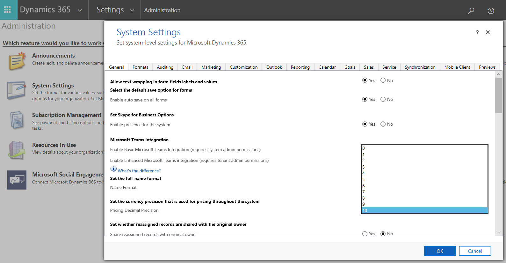
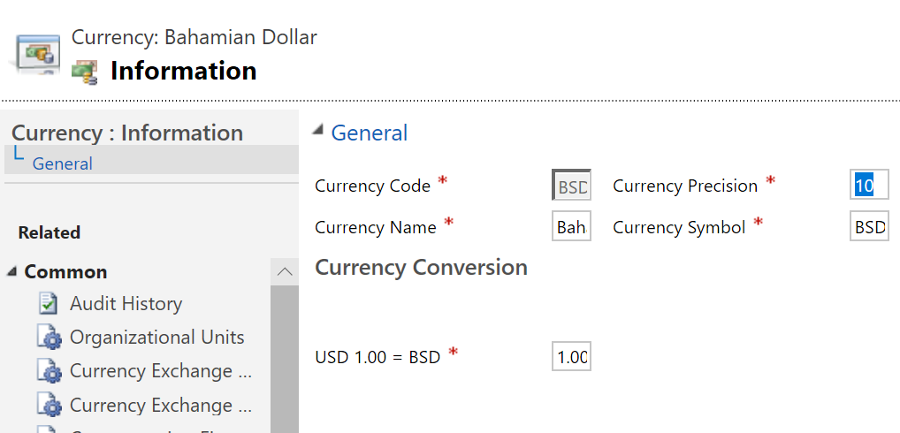

Migration vom Währungsdatentyp für duales Schreiben
[!include[banner](../../includes/banner.md)][!include[rename-banner](~/includes/cc-data-platform-banner.md)]Sie können die Anzahl der Dezimalstellen, die für Währungswerte unterstützt werden, auf maximal 10 erhöhen. Die Standardgrenze liegt bei vier Dezimalstellen. Indem Sie die Anzahl der Dezimalstellen erhöhen, können Sie Datenverluste vermeiden, wenn Sie zum Synchronisieren von dualem Schreiben verwenden. Die Erhöhung der Anzahl der Dezimalstellen ist eine Opt-In-Änderung. Um es zu implementieren, müssen Sie Unterstützung von Microsoft anfordern.
Das Ändern der Anzahl der Dezimalstellen erfolgt in zwei Schritten:
- Fordern Sie die Migration von Microsoft an.
- Ändern Sie die Anzahl der Dezimalstellen in Dataverse.
Die Finance and Operations App und Dataverse muss die gleiche Anzahl von Dezimalstellen in Währungswerten unterstützen. Andernfalls kann es zu Datenverlust kommen, wenn diese Informationen zwischen Apps synchronisiert werden. Der Migrationsprozess konfiguriert die Art und Weise neu, in der Währungs- und Wechselkurswerte gespeichert werden, ändert jedoch keine Daten. Nach Abschluss der Migration kann die Anzahl der Dezimalstellen für Währungscodes und Preise erhöht werden, und die Daten, die Benutzer eingeben und anzeigen, können dezimaler sein.
Die Migration ist optional. Wenn Sie möglicherweise mehr Dezimalstellen unterstützen, empfehlen wir Ihnen, die Migration in Betracht zu ziehen. Organisationen, die keine Werte mit mehr als vier Dezimalstellen benötigen, müssen nicht migrieren.
Fordern Sie die Migration von Microsoft an
Speicherung für vorhandene Währungsfelder in Dataverse kann nicht mehr als vier Dezimalstellen unterstützen. Daher werden während des Migrationsprozesses Währungswerte in neue interne Felder in der Datenbank kopiert. Dieser Vorgang wird kontinuierlich ausgeführt, bis alle Daten migriert wurden. Intern ersetzen am Ende der Migration die neuen Speichertypen die alten Speichertypen, die Datenwerte bleiben jedoch unverändert. Die Währungsfelder können dann bis zu 10 Dezimalstellen unterstützen. Während des Migrationsprozesses kann Dataverse ohne Unterbrechung weiter verwendet werden.
Gleichzeitig werden die Wechselkurse so geändert, dass sie bis zu 12 Dezimalstellen anstelle der aktuellen Grenze von 10 unterstützen. Diese Änderung ist erforderlich, damit die Anzahl der Dezimalstellen in der Finance and Operations App und Dataverse gleich ist.
Die Migration ändert keine Daten. Nach der Konvertierung der Währungs- und Wechselkursfelder können Administratoren das System so konfigurieren, dass bis zu 10 Dezimalstellen für Währungsfelder verwendet werden, indem die Anzahl der Dezimalstellen für jede Transaktionswährung und die Preisgestaltung angegeben werden.
Fordern Sie eine Migration an
Um diese Funktion verfügbar zu machen, senden Sie eine E-Mail **CDSExpandDecimal@microsoft.com** und schließen Sie die folgenden Informationen ein:
- Gegenstand: Anforderung zur Aktivierung der erweiterten Dezimalunterstützung für <organizationID>
- Körper: Ich möchte die erweiterte Dezimalunterstützung für meine Organisation <organizationID> aktivieren.
Ein Microsoft-Vertreter wird Sie innerhalb von zwei bis drei Werktagen für die nächsten Schritte kontaktieren.
Wenn Sie eine Migration anfordern, sollten Sie die folgenden Details kennen und entsprechend planen:
- Die für die Migration der Daten erforderliche Zeit hängt von der Datenmenge im System ab. Die Migration großer Datenbanken kann mehrere Tage dauern.
- Die Größe der Datenbank nimmt vorübergehend zu, während die Migration ausgeführt wird, da für Indizes zusätzlicher Speicherplatz benötigt wird. Der größte Teil des zusätzlichen Speicherplatzes wird freigegeben, wenn die Migration abgeschlossen ist.
- Wenn während des Migrationsprozesses Fehler auftreten, die den Abschluss der Migration verhindern, gibt das System Warnungen an den Microsoft-Support aus, damit die Support-Mitarbeiter eingreifen können. Selbst wenn während der Migration Fehler auftreten, bleibt Dataverse für den regelmäßigen Gebrauch voll verfügbar.
- Der Migrationsprozess ist nicht umkehrbar.
Ändern Sie die Anzahl der Dezimalstellen
Nachdem die Migration abgeschlossen ist, kann Dataverse Zahlen mit mehr Dezimalstellen speichern. Administratoren können auswählen, wie viele Dezimalstellen für bestimmte Währungscodes und für die Preisgestaltung verwendet werden. Benutzer von Microsoft Power Apps, Power BI und Power Automate können dann Zahlen mit mehr Dezimalstellen anzeigen und verwenden.
Um diese Änderung vorzunehmen, müssen Sie die folgenden Einstellungen in Power Apps aktualisieren:
- Systemeinstellungen: Währungsgenauigkeit für die Preisgestaltung – Das Feld Legen Sie die Währungsgenauigkeit fest, die für die Preisgestaltung im gesamten System verwendet wird definiert, wie sich die Währung für die Organisation verhält, wenn Preisgenauigkeit ausgewählt ist.
- Geschäftsführung: Währungen – Im Feld Währungspräzision können Sie eine benutzerdefinierte Anzahl von Dezimalstellen für eine bestimmte Währung angeben. Es gibt einen Fallback für die organisationsweite Einstellung.
Im Folgenden finden Sie einige Beschränkungen:
- Sie können das Währungsfeld für eine Entität nicht konfigurieren.
- Sie können mehr als vier Dezimalstellen auf den Ebenen Preisgestaltung und Transaktionswährung angeben.
Systemeinstellungen: Währungsgenauigkeit für die Preisgestaltung
Nach Abschluss der Migration können Administratoren die Währungsgenauigkeit festlegen. Gehen Sie zu Einstellungen > Verwaltung und wählen Sie Systemeinstellungen. Dann auf der Registerkarte Allgemein ändern Sie den Wert vom Feld Legen Sie die Währungsgenauigkeit fest, die für die Preisgestaltung im gesamten System verwendet wird wie in der folgenden Abbildung gezeigt.

Geschäftsdokumentverwaltung: Währungen
Wenn Sie verlangen, dass die Währungsgenauigkeit für eine bestimmte Währung von der Währungsgenauigkeit abweicht, die für die Preisgestaltung verwendet wird, können Sie sie ändern. Gehen Sie zu Einstellungen > Geschäftsführung, wählen Währungen und wählen die zu ändernde Währung aus. Dann stellen Sie das Feld Währungspräzision auf die Anzahl der gewünschten Dezimalstellen, wie in der folgenden Abbildung gezeigt.

Tabellen: Währungsfeld
Die Anzahl der Dezimalstellen, die für bestimmte Währungsfelder konfiguriert werden können, ist auf vier begrenzt.